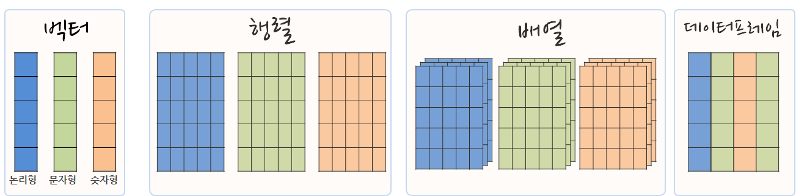

데이터 과학
측도와 R 자료구조
학습 목표
- 통계학에서 다루는 측정에 대해 살펴보고, 측정 척도에 대한 이론적 배경을 이해한다.
- 원자벡터와 리스트 차이를 살펴본다.
NULL,NA특수 자료형을 이해한다.- 범주형 자료를 표현하는 요인 자료형을 이해한다.
1. 측정 변수의 구분 1 2

명목형, 순서형, 구간형, 비율형 네가지로 측정 척도를 구분한다. 측정 척도에 따라 유의미한 통계량도 함께 정해진다. 자세한 사항은 Stevens, Stanley Smith. “On the theory of scales of measurement.” (1946). 논문을 참조한다.
2. 자료구조 기본
R에서 기본으로 사용하는 벡터 자료형은 원자 벡터(Atomic Vector) 와 리스트(List) 로 나눠진다. 원자 벡터에는 6가지 자료형이 있고, logical, integer, double, character, complex, raw, 총 6 개가 있으며 주로, 논리형, 정수형, 부동소수점형, 문자형, 4가지를 많이 사용한다. 리스트는 재귀 벡터(recursive vector)라고도 불리는데 리스트는 다른 리스트를 포함할 수 있기 때문이다. 3
| 자료형(Type) | 모드(Mode) | 저장모드(Storage Mode) |
|---|---|---|
| logical | logical | logical |
| integer | numeric | integer |
| double | numeric | double |
| complex | complex | complex |
| character | character | character |
| raw | raw | raw |
따라서, 원자벡터는 동질적(homogeneous)이고, 리스트는 상대적으로 이질적(heterogeneous)이다.
모든 벡터는 두가지 성질(Property)을 갖는데, 자료형과 길이로 이를 확인하는데 typeof()와 length() 함수를 사용해서 확인한다.
a <- list(
a = 1:3,
b = "a string",
c = pi,
d = list(-1, -5)
)
typeof(a)[1] "list"
length(a) [1] 4
모드 함수는 객체의 모드를 리턴하고, 클래스 함수는 클래스를 리턴한다. 가장 흔하게 만나는 객체 모드는 숫자, 문자, 로직 모드다. 때때로 리스트와 데이터프레임과 같이 하나의 객체안에 여러 모드를 포함하기도 한다.
리스트(List)는 데이터를 저장하는 유연하며 강력한 방법으로 sapply 함수와 함께 가장 빈번하게 사용되는 자료형이다. 리스트형 자료 a를 세가지 숫자형, 문자형, 숫자형, 리스트 네가지 자료형을 포함하게 작성한다. sapply 함수를 이용하여 mode와 class 인자를 넣어줌으로써, 각각 자료형의 모드와 자료형을 확인한다.
sapply(a, mode) a b c d
"numeric" "character" "numeric" "list"
sapply(a, class) a b c d
"integer" "character" "numeric" "list"
str(a[4])List of 1
$ d:List of 2
..$ : num -1
..$ : num -5
str(a[[4]])List of 2
$ : num -1
$ : num -5

리스트는 이질적인 객체를 담을 수 있다는 점에서 동질적인 것만 담을 수 있어 한계가 있는 원자벡터보다 쓰임새가 다르다. 회귀분석 결과 산출되는 lm 결과값은 다양한 정보를 담을 수 있는 리스트로 표현된다.
- 리스트 생성 :
list() - 하위 리스트 추출 :
[ - 리스트에 담긴 원소값 추출 :
[[,$→ 연산작업을 통해 위계를 갖는 구조를 제거한다.
범주형 자료를 R에 저장하기 위해서 요인(Factor) 클래스를 사용하며 요인 클래스를 사용하여 자료를 저장할 경우 저장공간을 절약할 수 있다. 요인은 내부적으로 숫자(value)로 저장을 하고 레이블(value label)을 사용하여 표시하여 저장공간을 절약한다.
날짜와 시간도 중요한 R에서 자주 사용되는 중요한 데이터 자료형으로 별도로 다룬다.
2.2. NULL과 NA 결측벡터와 결측값
결측되었다는 없다는 것을 표시하는 방법이 두가지 필요하다. 하나는 벡터가 없다는 NULL이고, 벡터 내부에 값이 결측되었다는 NA 다. dataframe$variable <- NULL 명령문을 사용하면 데이터프레임(dataframe)에 변수(variable)를 날려보내는 효과가 있다.
# NULL 자료형과 길이
typeof(NULL)[1] "NULL"
length(NULL)[1] 0
# NA 자료형과 길이
typeof(NA)[1] "logical"
length(NA)[1] 1
NA의 중요한 특징은 전염된다는 것이다. 즉, NA에 연산을 가하면 연산결과는 무조건 NA가 된다. NA가 7보다 큰지, 7을 더하고 빼고, 부울 연산을 하든 NA와 연산결과는 무조건 NA가 된다.
NA + 7[1] NA
NA / 7[1] NA
NA > 7[1] NA
7 == NA[1] NA
NA == NA[1] NA
3. 데이터프레임(Dataframe)
3.1. 벡터, 행렬, 배열, 데이터프레임
가장 많이 사용되는 논리형, 문자형, 숫자형을 통해 자료분석 및 모형개발을 진행하게 되고, 경우에 따라서 동일한 자료형을 모은 경우 이를 행렬로 표현할 수 있고, 행렬을 모아 RGB 시각 데이터를 위한 배열(Array)로 표현한다. 데이터프레임은 서로 다른 자료형을 모아 넣은 것이다.

3.2. 데이터프레임
R 은 6가지 기본 벡터로 자료를 저장하지만, 이외에 행렬(matrix), 데이터프레임(data.frame), 리스트(list) 자료구조가 있다. 하지만, 자료분석을 위해서 데이터를 데이터셋의 형태로 구성을 해야한다. 데이터셋이 중요한 이유는 자료를 분석하기 위해서 다양한 형태의 개별 자료를 통합적으로 분석하기 위해서다. 이를 위해서 리스트 자료구조로 일단 모으게 된다. 예를 들어 개인 신용분석을 위해서는 개인의 소득, 부채, 성별, 학력 등등의 숫자형, 문자형, 요인(Factor)형 등의 자료를 데이터셋에 담아야 한다. 특히 변수와-관측값 (Variable-Observation) 형식의 자료를 분석하기 위해서는 데이터프레임(data.frame)을 사용한다. 데이터프레임은 모든 변수에 대해서 관측값이 같은 길이를 갖도록 만들어 놓은 것이다.
데이터프레임은 data.frame 함수를 사용해서 생성한다. R 객체 구조 파악을 위해서는 간단한 자료의 경우 데이터 형식을 확인할 수 있는 1–2줄 정도의 간단한 스크립트와 명령어를 통해서 확인이 가능하지만, 복잡한 데이터의 구조를 파악하기 위해서는 summary 함수와 str 함수를 통해서 확인해야 한다.
# 벡터를 정의한다.
name <- c("Mercury", "Venus", "Earth", "Mars", "Jupiter", "Saturn", "Uranus", "Neptune")
type <- c("Terrestrial planet", "Terrestrial planet", "Terrestrial planet",
"Terrestrial planet", "Gas giant", "Gas giant", "Gas giant", "Gas giant")
diameter <- c(0.382, 0.949, 1, 0.532, 11.209, 9.449, 4.007, 3.883)
rotation <- c(58.64, -243.02, 1, 1.03, 0.41, 0.43, -0.72, 0.67)
rings <- c(FALSE, FALSE, FALSE, FALSE, TRUE, TRUE, TRUE, TRUE)
# 벡터를 합쳐서 데이터프레임을 생성
planets_df <-data.frame(name, type, diameter, rotation, rings)3.2. 범주형, 순서형 자료형
범주형, 순서형 자료형을 생성하는 경우 주의를 기울여야 한다. factor 함수를 사용해서 요인형 자료형을 생성하는데, 내부적으로 저장공간을 효율적으로 사용하고 속도를 빠르게 하는데 유용한다. 순서를 갖는 범주형의 경우 factor 함수 내부에 levels 인자를 넣어 정의하면 순서 정보가 유지된다.
# 범주형
animals_vector <- c("Elephant", "Giraffe", "Donkey", "Horse")
factor_animals_vector <- factor(animals_vector)
factor_animals_vector[1] Elephant Giraffe Donkey Horse
Levels: Donkey Elephant Giraffe Horse
# 순위형
temperature_vector <- c("High", "Low", "High","Low", "Medium")
factor_temperature_vector <- factor(temperature_vector, order = TRUE, levels = c("Low", "Medium", "High"))
factor_temperature_vector[1] High Low High Low Medium
Levels: Low < Medium < High
# "M", "F" 수준
survey_vector <- c("M", "F", "F", "M", "M")
factor_survey_vector <- factor(survey_vector)
levels(factor_survey_vector)[1] "F" "M"
# "Female", "Male" 로 변환
levels(factor_survey_vector) <- c("Female", "Male")
levels(factor_survey_vector)[1] "Female" "Male"
# 문자형 벡터와 요인 벡터
survey_vector <- c("M", "F", "F", "M", "M")
factor_survey_vector <- factor(survey_vector)
# 문자형 벡터 요약
summary(survey_vector) Length Class Mode
5 character character
# 요인 벡터 요약
summary(factor_survey_vector)F M
2 3
Stevens, Stanley Smith. “On the theory of scales of measurement.” (1946).↩
Wiener, Norbert. “A new theory of measurement: a study in the logic of mathematics.” Proceedings of the London Mathematical Society 2.1 (1921): 181-205.↩